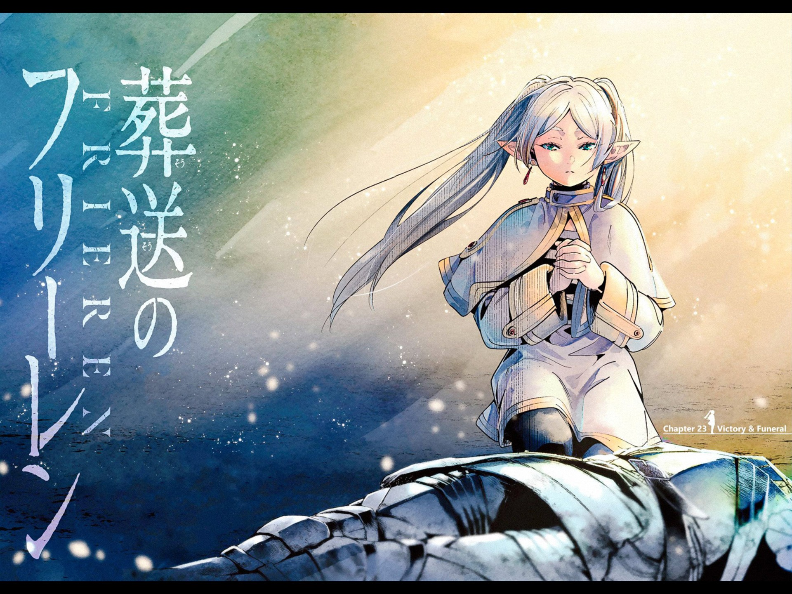

Frieren: Beyond Journey's End (Japanese: 葬送のフリーレン, Hepburn: Sōsō no Furīren, lit. 'Frieren at the Funeral' or 'Frieren the Slayer')[a] is a Japanese manga series written by Kanehito Yamada [ja] and illustrated by Tsukasa Abe [ja]. It has been serialized in Shogakukan's shōnen manga magazine Weekly Shōnen Sunday since April 2020, with its chapters collected in 13 tankōbon volumes as of April 2024. The series is licensed for English release in North America by Viz Media and in Singapore by Shogakukan Asia for Southeast Asia release. An anime television series adaptation produced by Madhouse aired from September 2023 to March 2024.
Taking place in a fantasy world, the story follows Frieren, an elven mage, as she embarks on a journey to reach the resting place of souls in order to reunite with her former comrade Himmel, whose Hero Party once slew the Demon King. By March 2024, the manga had over 20 million copies in circulation. Frieren: Beyond Journey's End won the 14th Manga Taishō and the 25th annual Tezuka Osamu Cultural Prize's New Creator Prize in 2021, and the 69th Shogakukan Manga Award and the 48th Kodansha Manga Award (in the shōnen category) in 2024.
Plot
The story follows elven mage Frieren, a former member of the party of adventurers who defeated the Demon King and restored harmony to the world after a ten-year quest. In the past, the heroic group included Frieren, human hero Himmel, dwarven warrior Eisen, and human priest Heiter. Before they part, they observe the Era Meteors together, a meteor shower that occurs once in fifty years. Frieren agrees to see them again and offers them a better view the next time the celestial event occurs. Frieren then departs and travels the world in pursuit of magical knowledge. Frieren returns to the capital fifty years later; however, humanity has changed, and her former companions have distinctly aged. After one last adventure to see the meteor shower, Himmel dies of old age. During the funeral, Frieren expressed guilt for not attempting to learn more about him. Frieren then pays a visit to her other former comrades. She accepts an offer to teach and care for Fern, an orphaned child adopted by Heiter. She also receives an invitation to travel far north, to the resting place of souls, and see Himmel again to bid the hero a fitting farewell and express her feelings. To fulfill those requests, Frieren embarks on a journey together with Fern while still pursuing her passion for learning magic. Along the way, she picks up Stark, a young warrior boy taught by Eisen, to join her party. Frieren's elven nature grants her an extremely long lifespan, causing her to view periods of years or decades as ephemeral (this perception of time makes her consider the ten-year adventure with Himmel's party a fleeting experience). The story thus takes place across a long time, with periodic flashbacks accompanied by the physical and mental development of characters apart from Frieren herself.
Production
Katsuma Ogura, the editor-in-charge of Frieren, noted that Yamada's previous work, Bocchi Hakase to Robot Shoujo no Zetsubou Teki Utopia, did not sell well, despite considering it a masterpiece. This led to the suggestion of giving Yamada an illustrator for Frieren. They had several thoughts that went from a gag manga which resulted in storyboards for a one-shot of Frieren. Upon reading the one-shot of Frieren, Ogura started laughing, claiming that it was not a comedy at all. When Yamada finished the first storyboard, before sending it to the editorial department, Ogura contacted Abe and asked them to draw a character chart. Yamada was impressed with it and Ogura asked him do it, submitting the project to the editorial. Ogura was impressed with Abe's artwork and suggested that he work with Yamada. Yamada was impressed with the first illustration of Frieren, believing the title character had an aura of humanity.[4] After Kanehito Yamada, who was in charge of the original work, finished serializing his previous work, "Since it was a comedy about demons, I suggested that they try writing a gag in that direction, and suddenly the name of the first chapter of Funeral Frieren" came up.[5][6] After that, he decided to hire someone to be in charge of drawing, and when he showed his name to Tsukasa Abe, who was also in charge, he responded, "I'd like to draw it." When I asked him to draw a character picture for Frieren, Yamada said, "If this is the person, please do it." Abe was put in charge of the animation.[5][6] The origin of the title of this work is that Yamada had a title idea, but the editorial department also considered it, and at the editorial department meeting, the editor in charge said, "If we decide on a good title, we will pay a prize of 10,000 yen out of our own pocket." One of the title ideas submitted by the deputy editor-in-chief was Funeral Frieren, and Yamada and Abe finally decided on the title, which became the current title.[7] For the animated adaptation by Madhouse, Tomohiro Suzuki said Fern's character was too different depending on who she is interacting with; with Frieren there is a motherly bond while in front of Stark, she acts like a childish normal teenager. Director Keiichiro Saito added that Fern appears to have several changes in the narrative as her growth has a major impact on Frieren. When it comes to Stark, Suzuki says that despite being a coward, he is still written to be handsome and cool and has a major impact on Fern as he becomes the first young male friend she has ever met and socialized with in her entire life.[8]
Video of Frieren